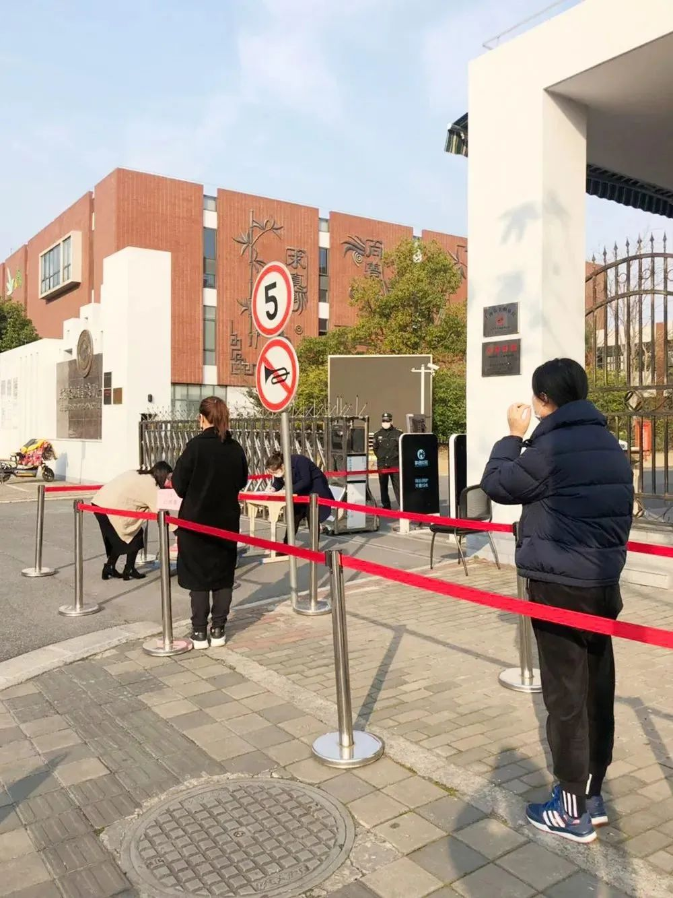
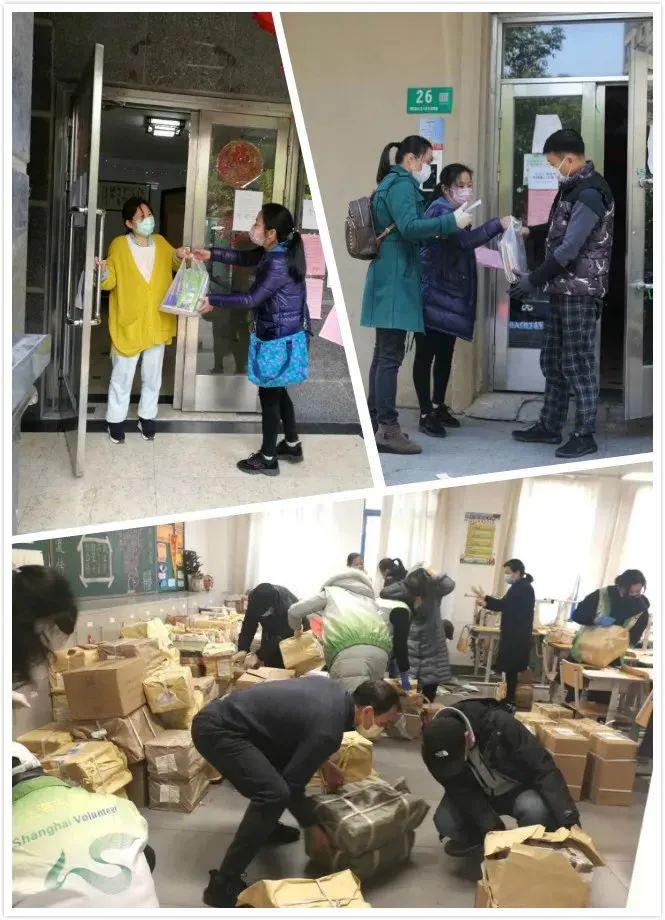

上海中小学3月2日起在线教育，到底怎么上？
原文链接 备份链接 澎湃新闻记者 栾晓娜 2020年2月18日下午2:00，上海举行新闻发布会，邀请市教委主任陆靖，上海交通大学常务副校长、中国科学院院士丁奎岭，市卫生健康委新闻发言人郑锦，长宁区绿苑小学校长王晶介绍上海新冠肺炎疫情防控 …
澎湃新闻记者 韩晓蓉

上海市宝山区美罗家园第一小学的家长们自觉戴上口罩，彼此相隔一米以上排队。 均为受访者供图
把教材安全送到孩子手中，上海的教师和家长配合默契。
在上海市宝山区美罗家园第一小学，所有分发教材的教师保持一米以上的距离，各班家长们自觉戴上口罩，同样每人间隔一米。
受疫情影响，上海140多万中小学生从3月2日起开始在线教育，上海市教委要求，在发放电子教材的基础上，各学校坚持“消毒防控、自愿预约、分散领取、确保安全”原则，陆续开展纸质教材的发放工作，确保学生3月2日在线学习开展前，人手一套纸质教材或电子教材。

教师分发教材
家长间隔一米排队领教材
上海市宝山区美罗家园第一小学（简称“美罗一小”）相关负责人介绍，根据上海市教委和宝山区教育局的相关要求，学校在征询家长意见的基础上，制定了灵活的纸质教材发放方案。由学校提前做好预约登记工作，合理安排领取时段、领取地点和领取方式。纸质教材的领取方式包括到校领取和快递寄送。
根据学校前期意见征询单数据显示，大部分家长自愿到校领取教材。为此，美罗一小分批利用两到三天的时间，为全校学生的教材进行消毒、分装打包。
学校高度重视教材分发环节的卫生防控措施，教师们进校门先测体温、填写登记表，再戴上手套、口罩，全副武装进行分书行动。
从分书到清点，再到最后的打包，所有教师保持一米以上的距离，确保分发环节中相对的独立性，避免交叉环节。此外，美罗一小还安排了后勤工作人员对教材进行最后的消毒处理。
学校还提前设计了家长领取教材的路线图和流程规划。从早上8点到下午4点，每班预留一个小时分发教材，各班家长们自觉戴上口罩，彼此间隔一米以上排队，教材发放领取工作有序开展。
同样，行知中学也采取分年级、分班级、分时段、免接触原则，安排教职员工“一人一包”完成纸质教材分发，做好教材、场地等清洁消毒工作。
在教材领取现场，学校在地面上黏贴1米间隔排队的黄色警示条，入口处黑板上放置醒目的发放流程示意图，告知家长材料领取流程。在学校引导下，每位家长间隔一米有序排队，在进入登记处后由班主任查验学生证后，自提教材。此外，学校还设有教材清点处，每人一桌，贴有教材清单和放置免洗消毒液供家长使用。
在闵行区莘松中学，教师们分拣打包之快，让人咋舌，网上热传的一段魔性“灵魂分拣员”视频让教师们再度成为网红，莘松中学的教师们不断规范操作流程，逐步提高工作效率，很快完成了两个校区近3000名学生课本的分拣打包。经过这样的“魔鬼训练”，教师们笑称，已经熟练get了分拣员的技能。

行知中学每位家长间隔一米有序排队领教材。
为2294名学生上门送教材
“上海康城”是上海市最大社区，康城学校就位于该社区内，全校有中小学生近3000名。
基于学生居住比较集中的特点，学校经过与康城社区党委、业委会以及校家委会共同协商，最终决定克服困难，将家长来校领取的方式，改为学校送教材上门，既最大程度节约社会资源，又能避免聚集。

康城学校老师和志愿者熟练打包并送教材上门。
方案确定后，学校募集志愿者，迅速行动。全体行政、党员、后勤人员、家长志愿者，以及康城“两委一中心”志愿者、康城小区物业志愿者多方合力，用一天半就完成了对2294个居住在康城小区学生的教材递送。家长们收到教材后，连连感叹学校递送教材的高效，也深深为志愿者们的辛苦分送而感动。
闵行区教育局相关负责人介绍，从2月19日起，该区启动了149所学校共计163293名中小学生教材的发放工作，保证无论在上海还是外省的学生，都能于2月28日前，人手一套纸质教材或电子版教材。
本期编辑 常琛
推荐阅读


原文链接 备份链接 澎湃新闻记者 栾晓娜 2020年2月18日下午2:00，上海举行新闻发布会，邀请市教委主任陆靖，上海交通大学常务副校长、中国科学院院士丁奎岭，市卫生健康委新闻发言人郑锦，长宁区绿苑小学校长王晶介绍上海新冠肺炎疫情防控 …
原文链接 备份链接 “ - 疫 情 之 下 - 她不会要求她的学生们将来必须成为医务工作者、科学家、警察、建筑工、老师，但她一定会要求自己的学生，好好学习，将来一定要用自己所学、所知、所拥有的知识和技能守护好那些曾经守护过他们的人。 ” …
原文链接 备份链接 ⬆️猪西西偷偷寄信的视频⬆️ 这段时间网上经常会流传一些关于疫情期间关在家里的段子，其中有一个是说：“疫情期间老婆不听话就随便打，因为她跑不掉也没地方去。” 不知道为什么会有人觉得这样怂恿家暴的话好笑。特别是，当知 …
原文链接 备份链接 看到老师发在班级群里别人家小孩听网课认真做的笔记，自己家的熊孩子却边听网课边睡觉，笔都不拿出来，妈妈们立刻炸了毛。火势再蔓延到孩子爸爸身上，爷爷奶奶也赶来劝，结果就是一场又一场的家庭混战。 配图 |《学区房72小时》 …
原文链接 备份链接 “有一次我突击去检查孩子的网课情况，发现她网课是在播放，但是电脑桌面当前窗口显示的却是她的QQ群，原来一群同学正聊得欢。” 记者|王晓珊 编辑| 盛倩玉 小豆 实习生| 甘笠男 刘苗苗 龚纾绮 “咋出来的不是云课堂？难 …